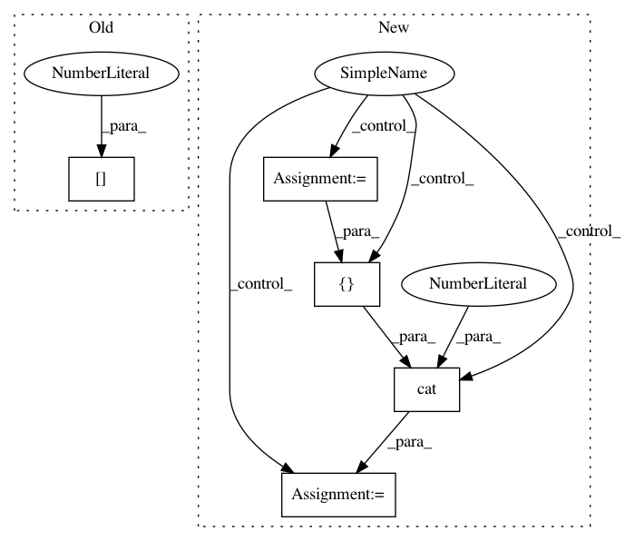

84c0cd80f13df87c1b8e5f547a9b77a490a874b1,hypergan/samplers/factorization_batch_walk_sampler.py,FactorizationBatchWalkSampler,__init__,#FactorizationBatchWalkSampler#Any#Any#Any#,11
Before Change
self.hardtanh = nn.Hardtanh()
//self.mask = 1 - self.mask
g_params = list(self.gan.g_parameters())
params = [g_params[8]]
params += [g_params[0]]
print([p.shape for p in params])
cat_params = torch.cat(params,1)
After Change
g_params = self.gan.latent_parameters()
if self.latent1.shape[1] // 2 == g_params[0].shape[1]:
//recombine a split
g_params = [torch.cat([p1, p2], 1) for p1, p2 in zip(g_params[:len(g_params)//2], g_params[len(g_params)//2:])]
self.eigvec = torch.svd(torch.cat(g_params, 0)).V
//self.eigvec = torch.svd(list(self.gan.g_parameters())[0]).V
self.index = 0
In pattern: SUPERPATTERN
Frequency: 3
Non-data size: 5
Instances
Project Name: HyperGAN/HyperGAN
Commit Name: 84c0cd80f13df87c1b8e5f547a9b77a490a874b1
Time: 2020-08-09
Author: martyn@255bits.com
File Name: hypergan/samplers/factorization_batch_walk_sampler.py
Class Name: FactorizationBatchWalkSampler
Method Name: __init__
Project Name: allenai/allennlp
Commit Name: 3b0ed358c084c2b619f5147f189d1f969f4fec75
Time: 2017-11-07
Author: markn@allenai.org
File Name: allennlp/modules/seq2seq_encoders/pytorch_seq2seq_wrapper.py
Class Name: PytorchSeq2SeqWrapper
Method Name: forward
Project Name: allenai/allennlp
Commit Name: 5acb5a785b9ed60743e6f687a96bd92dd4e88578
Time: 2017-11-29
Author: markn@allenai.org
File Name: allennlp/modules/seq2vec_encoders/pytorch_seq2vec_wrapper.py
Class Name: PytorchSeq2VecWrapper
Method Name: forward